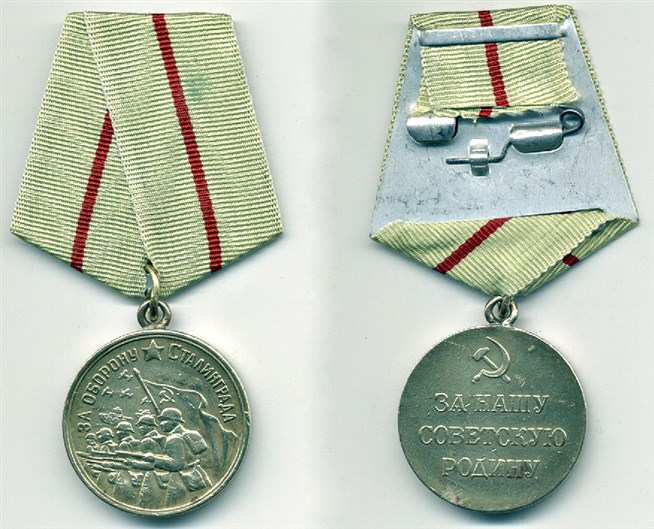

Оглавление
Сталингра́дская би́тва — стратегическое сражение в Великой Отечественной войне, продолжалось с 17 июля 1942 года по 2 февраля 1943 года в течение 200 дней и ночей и включала оборонительную (17 июля — 18 ноября 1942) и наступательную (19 ноября 1942 — 2 февраля 1943) операции. Победа в Сталинградской битве стала переломным моментом в ходе Великой отечественной войны. Советский Союз после этой победы начал освобождение своей территории от немецких захватчиков. Германия после поражения на Волге потеряла стратегическую инициативу.
В ознаменование победы советских войск под Сталинградом 2 февраля установлен День воинской славы России — День разгрома советскими войсками немецко-фашистских войск в Сталинградской битве в 1943 году.
В оборонительных сражениях в районе Сталинграда и в самом городе войска Сталинградского фронта (командующий С.К. Тимошенко, с 23 июля генерал-лейтенант В.Н. Гордов, с 9 августа генерал-полковник А.И. Еременко), Юго-Восточного фронта (7 августа — 27 сентября), Донского фронта (с 28 сентября; генерал-лейтенант, 15 января 1943 генерал-полковник К.К. Рокоссовский) остановили наступление немецких 6-й полевой армии и 4-й танковой армии.
Оборонительная операция
Сталинградский фронт был создан 12 июля 1942 года. Его командующему маршалу С.К. Тимошенко была поставлена задача, обороняясь в полосе шириной 520 км, остановить продвижение противника, который превосходил советские войска в людях в 1,4 раза, танках в 2 раза, в самолетах — в 3,5 раза. Основные усилия фронта были сосредоточены в большой излучине Дона, где заняли оборону 62-я армия генерал-лейтенанта В.И. Чуйкова и 64-я армия генерал-майора М.С. Шумилова. Перед ними стояла задача не допустить форсирования противником реки и прорыва его кратчайшим путем к Сталинграду. Оборонительная операция началась 17 июля 1942 года на дальних подступах к Сталинграду. После месяца упорных боев советским войсками пришлось отойти на ближние подступы к городу.
23 августа 1942 года противнику удалось прорваться к Волге севернее Сталинграда, после чего немцы попытались захватить город ударом с севера вдоль Волги, но их попытка с ходу ворваться в город была сорвана. Немецкие войска были остановлены на северо-западных окраинах города и только 12 сентября вплотную подошли к Сталинграду с запада и юго-запада, и в городе развернулись ожесточенные уличные бои. За четыре месяца боев между Доном и Волгой противник потерял около 700 тысяч человек убитыми и ранеными и большое количество боевой техники. Наши войска потеряли свыше 640 тысяч человек.
Наступательная операция
План контрнаступления под кодовым наименованием «Уран», разработанный советским командованием, предусматривал нанесение глубоких охватывающих ударов по флангам вражеской группировки под Сталинградом по сходящимся направлениям на Калач в целях окружения и разгрома противника. Для проведения операции привлекались войска трех фронтов: Юго-Западного под командованием генерал-лейтенанта Н.Ф. Ватутина, Донского под командованием генерал-лейтенанта К.К. Рокоссовского, Сталинградского под командованием генерал-полковника А.И. Еременко. Координацию их действий осуществлял представитель Ставки генерал-полковник A.M. Василевский.
В 7 часов 20 минут 19 ноября 1942 года залпами 7 тысяч орудий и реактивных установок началось контрнаступление советских войск под Сталинградом. Войска Юго-Западного фронта (командующий — с 22 октября генерал-лейтенант, с 7 декабря генерал-полковник Н.Ф. Ватутин), наступавшие из районов Серафимовича и Клетской, в первый же день прорвали оборону 3-й румынской армии и продвинулись на юго-восток в направлении населенных пунктов Калач, Советский на глубину 25-35 км. Войска 65-й армии Донского фронта, встретив сильное сопротивление, продвинулись лишь на 3-5 км. 20 ноября перешли в наступление войска Сталинградского фронта, нанося удар южнее Сталинграда. 62-я армия вела сковывающие бои в городе. Действия войск фронта поддерживала 8-я воздушная армия. Сокрушив оборону противника, войска Сталинградского фронта устремились на северо-запад к Калачу.
На третий день наступления в районе Распопинской было окружено 5 румынских дивизий, которые 23 ноября капитулировали. В этот же день передовые соединения Юго-Западного фронта встретились с частями Сталинградского фронта в районе населенных пунктов Калач, Советский. Окружение вражеской группировки под Сталинградом было завершено. В кольце оказались 22 дивизии и 160 отдельных частей противника. А. Гитлер отдал приказ командующему 6-й полевой армией генерал-полковнику Ф. Паулюсу оставаться на занимаемых позициях под Сталинградом и организовать круговую оборону.
К 30 ноября 1942 года наши войска сжали кольцо окружения, сократив более чем вдвое территорию, занимаемую противником, но рассечь и уничтожить его группировку с ходу не смогли. В то же время был образован более чем 500-километровый внешний фронт окружения противника. В конце ноября командование противника создало новую группу армий «Дон» под командованием генерал-фельдмаршала Э. Манштейна с целью деблокирования окруженных. 12 декабря 1942 года немцы из района Котельниково перешли в наступление. Но немецкие танковые дивизии были остановлены на реке Мышкова, а затем разгромлены. Почти одновременно с Котельниковской операцией 16 декабря 1942 года развернулось наступление советских войск на Среднем Дону. Оно вынудило немецкое командование отказаться от попыток деблокировать окруженную группировку. К концу декабря войска левого крыла Воронежского фронта, Юго-Западного фронта, Сталинградского фронта разгромили противника перед внешним фронтом окружения и отбросили остатки его соединений на 150-200 км. Этим были созданы благоприятные условия для ликвидации окруженных под Сталинградом вражеских войск.
В течение декабря 1942 года была сорвана попытка организовать снабжение окруженной группировки с помощью авиации и при этом уничтожено более 700 вражеских самолетов. К началу января 1943 года численность группировки противника сократилась до 250 тысяч человек, в ее составе оставалось до 300 танков, более 4,1 тыс. орудий и минометов и 100 боевых самолетов. Для ликвидации окруженных вражеских войск была разработана операция «Кольцо», осуществление которой возложили на усиленный подкреплениями Донской фронт, войска которого превосходили противника по артиллерии в 1,7 раза, самолетам в 3 раза, но уступали ему в людях и танках в 1,2 раза. Представителем Ставки на Донской фронт был назначен генерал-полковник артиллерии Н.Н. Воронов. После отклонения противником предложения о капитуляции 10 января 1943 года войска фронта перешли в наступление, которому предшествовала артиллерийская и авиационная подготовка.
В результате операции вражеская группировка была рассечена на две части. 31 января 1943 года прекратила сопротивление южная группа войск 6-й армии во главе с генерал-фельдмаршалом Паулюсом, а 2 февраля капитулировала и северная группа. Войска Донского фронта с 10 января по 1 февраля 1943 года взяли в плен 91 тысячу солдат и офицеров противника, около 140 тысяч было убито в ходе наступления.
Победа советских войск под Сталинградом оказала определяющее влияние на дальнейший ход Великой Отечественной войны. В результате победы под Сталинградом Советский Союз овладел стратегической инициативой, был достигнут коренной перелом в ходе Великой Отечественной войны, который оказал серьезное влияние на дальнейший ход всей Второй мировой войны. Поражение Германии изменило дальнейший характер действий немецких войск на других фронтах — на Кавказе, под Москвой.
Поражение Германии в Сталинградской битве вызвало кризис профашистских режимов в Италии, Румынии, Венгрии, Словакии. Влияние Германии на ее союзников резко ослабло, обострились разногласия между ними. Победа на Волге вынудила Турцию и Японию воздержаться от вступления в войну против СССР.
После сокрушительного поражения перед германским командованием встала проблема восстановления людских потерь, и потерь в технике, которые превысили потери Германии за весь предыдущий период боев на советско-германском фронте.
В феврале 2018 года исполняется 75 лет разгрому советскими войсками немецко-фашистских войск в Сталинградской битве. Учитывая особое значение этой великой победы для достижения Победы в Великой Отечественной войне 1941–1945 годов и в связи с исполняющимся 2 февраля 2018 года 75-летием этого исторического события, Президент России В. Путин подписал Указ «О праздновании 75-летия разгрома советскими войсками немецко-фашистских войск в Сталинградской битве»
